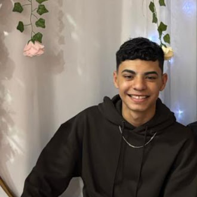
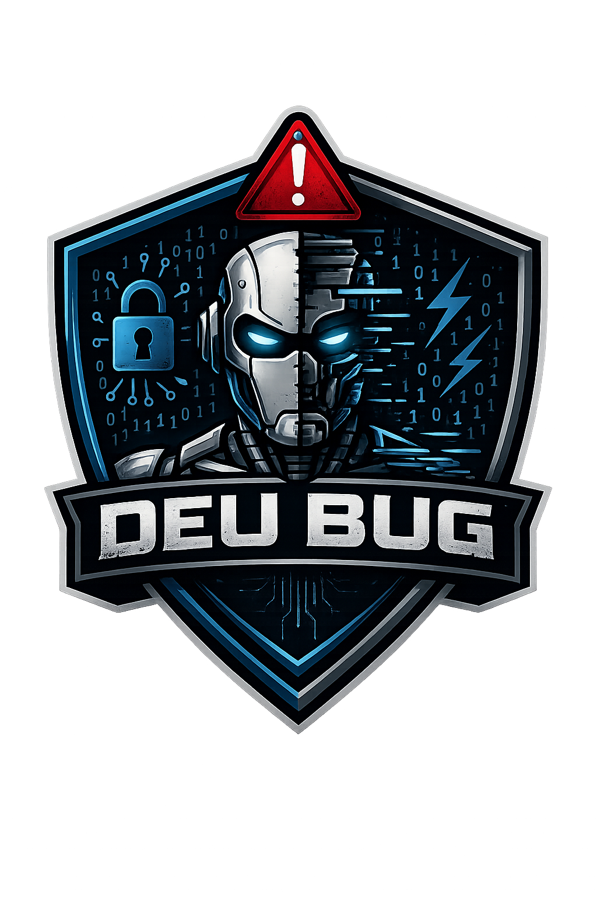

Integrantes
Emanuele Torsoni
Responsável pelo projeto inicial

Júlia Santos
Desenvolvimento Front-end
Murilo da Silva
Design e identidade visual
Raí Costa
Pesquisa e conteúdo


Responsável pelo projeto inicial
Desenvolvimento Front-end
Design e identidade visual
Pesquisa e conteúdo

Nosso grupo foca em criar soluções que ajudem a proteger dados, deixar sistemas e dispositivos mais seguros e incentivar o uso ético e responsável da tecnologia. A gente busca unir inovação com confiança, sempre pensando na responsabilidade digital e em como tornar o ambiente online mais seguro para todos.
Nosso brasão foi pensado em algo relacionado com o tema, colocando na logotipo um robô no centro e com o nome da nossa escuderia. Em cima do robô um símbolo que representa um "erro" ou até mesmo um sinal de alerta que algo "Deu Bug", e nas laterais cadeados que foram pensados na segurança e privacidade e também códigos e números binários.